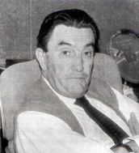
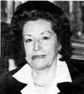
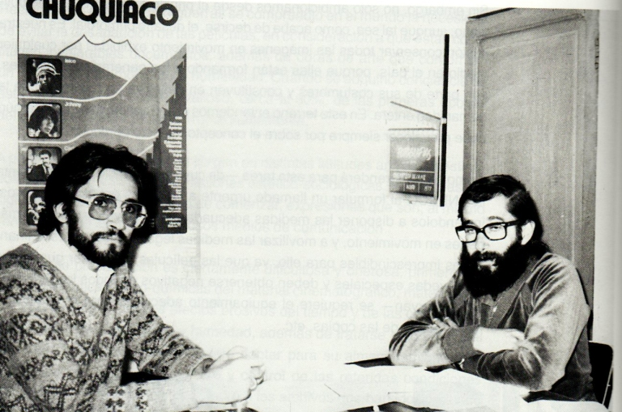
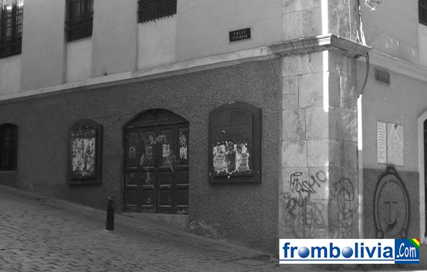
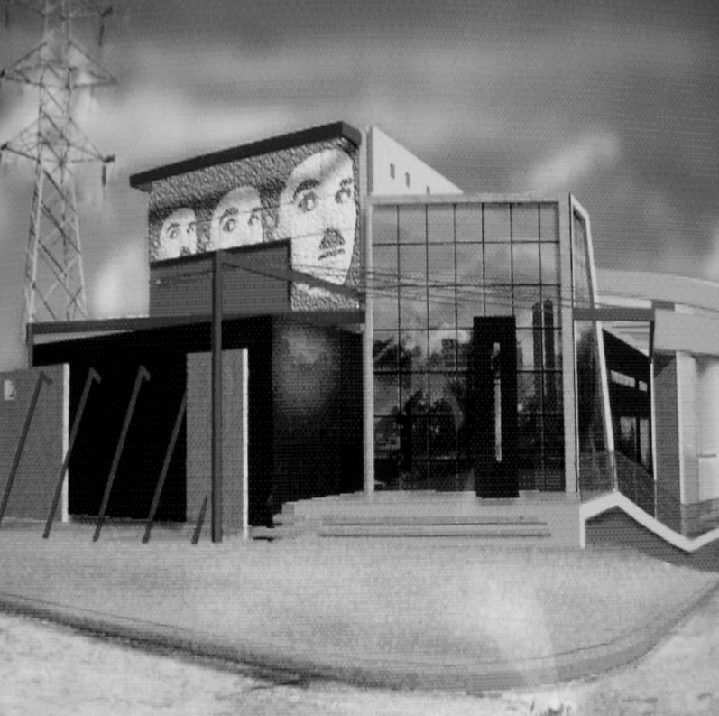
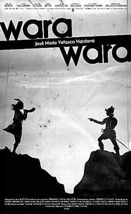

| La Cinemateca inició sus actividades el 12 de julio de 1976 bajo la iniciativa del alcalde de La Paz de Mario Mercado
Vaca Guzmán, Amalia de Gallardo directora del departamento de Espectáculos de la alcaldía de La Paz y el padre Renz
Cotta del Centro de Orientación Cinematográfica de la obra Don Bosco. Al fundar esta entidad destinada a recuperar
la memoria cinematográfica del país, Amalia de Gallardo y Renzo Cotta organizaron un archivo fílmico y un lugar para
la difusión del séptimo arte, del que fueron impulsores permanentes. Los administradores en ese entonces fueron Pedro
Susz y Carlos Mesa. |
Mario Mercado Vaca Amalia de Gallardo Renz Cotta |
Carlos Mesa y Pedro Senz |
En un inicio se la denominó Fundación Cinemateca de La Paz, luego por Ley del Estado No. 1302 fue cambiada de
nombre a depositaria nacional del cine. En septiembre de 1977 pasa a ser nombrada Fundación Cinemateca Boliviana.Desde el 27 de junio de 1978, es reconocida oficialmente por el Estado como Archivo Nacional de Imágenes en Movimiento mediante Decreto Ley Nº 15604. Al inicio de sus actividades las proyecciones cinematográficas se las realizaba una vez por semana en el salón Modesta Sanjinés de la Casa de la Cultura Franz Tamayo. En 1978 la Fundación Cinemateca Boliviana se traslada a la Calle Pichincha esquina Indaburo, al viejo cine San Calixto perteneciente a la Compañía de Jesús. |
| Luego de luchar se logro la concecion de un terreno de propiedad de la fundación Rosa Agramonte en favor de la Cinemateca, terreno que fue cedido en calidad de usufructo por el plazo de 20 años renovables. Posterior a la posesión del terreno se llamó a un concurso de proyectos para la construcción de un nuevo edificio. De una treintena de propuestas en septiembre de 1992, se eligió al proyecto ganador. En febrero de 1996, cumplido el plazo de presentación de proyectos arquitectónicos, e implementación técnica complementaria, la Fundación Cinemateca Boliviana puso a consideración de las autoridades gubernamentales, a los organismos de crédito, embajadas de países amigos, y a la opinión pública en general, el proyecto final para la construcción del nuevo edificio de la FUNDACIÓN CINEMATECA BOLIVIANA. |
Esquina Pichincha e Indaburro |
> |
Finalmente, el 26 de octubre de 2007 la Fundación Cinemateca Boliviana, inauguró su propio edificio luego de muchos trámites burocráticos que retrasaron por años el inicio de la construcción. La edificación de este complejo cinematográfico y cultural demandó una inversión de cinco millones de dólares y tardó 10 años en ser construido sobre una extensión de 6.500 metros cuadrados. El edificio fue inaugurado con la proyección del filme «Wara Wara», que es la primera película boliviana muda producida por el cineasta José María Velasco Maidana en 1929. |  |